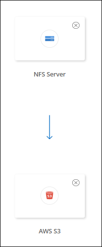
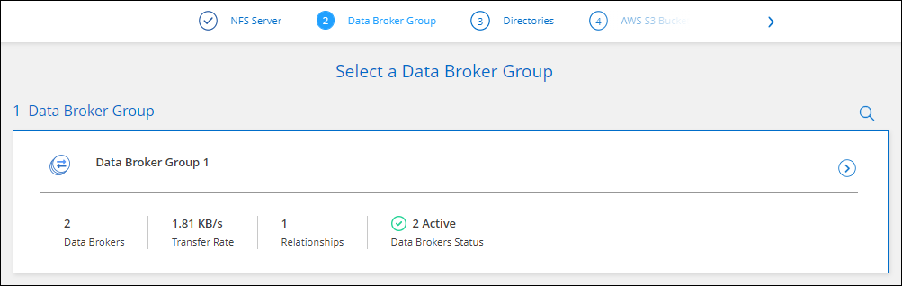

문서 변경 요청
문서 변경 요청 이 페이지 편집
이 페이지 편집 기여하는 방법 자세히 알아보기
기여하는 방법 자세히 알아보기동기화 관계를 생성합니다
동기화 관계를 생성하면 Cloud Sync 서비스는 소스에서 타겟으로 파일을 복사합니다. 초기 복사 후, 서비스는 24시간마다 변경된 데이터를 동기화합니다.
동기화 관계의 일부 유형을 생성하려면 먼저 Cloud Manager에서 작업 환경을 생성해야 합니다.
특정 유형의 작업 환경에 대한 동기화 관계를 생성합니다
다음 중 하나를 위한 동기화 관계를 생성하려면 먼저 작업 환경을 생성하거나 검색해야 합니다.
-
ONTAP용 Amazon FSx
-
Azure NetApp Files
-
Cloud Volumes ONTAP
-
온프레미스 ONTAP 클러스터
-
작업 환경을 만들거나 검색합니다.
-
Canvas * 를 클릭합니다.
-
위에 나열된 유형과 일치하는 작업 환경을 선택합니다.
-
동기화 옆에 있는 작업 메뉴를 선택합니다.

-
이 위치에서 데이터 동기화 * 또는 * 이 위치로 데이터 동기화 * 를 선택하고 프롬프트에 따라 동기화 관계를 설정합니다.
다른 유형의 동기화 관계를 생성합니다
다음 단계를 수행하여 ONTAP, Azure NetApp Files, Cloud Volumes ONTAP 또는 온프레미스 ONTAP 클러스터에 대해 Amazon FSx 이외의 지원되는 스토리지 유형과 데이터를 동기화할 수 있습니다. 아래 단계에서는 NFS 서버에서 S3 버킷으로 동기화 관계를 설정하는 방법을 보여 주는 예를 제공합니다.
-
Cloud Manager에서 * Sync * 를 클릭합니다.
-
동기화 관계 정의 * 페이지에서 소스 및 대상을 선택합니다.
다음 단계에서는 NFS 서버에서 S3 버킷으로 동기화 관계를 생성하는 방법의 예를 제공합니다.

-
NFS 서버 * 페이지에서 AWS에 동기화할 NFS 서버의 IP 주소 또는 정규화된 도메인 이름을 입력합니다.
-
Data Broker Group * 페이지에서 프롬프트에 따라 AWS, Azure 또는 Google Cloud Platform에서 데이터 브로커 가상 컴퓨터를 만들거나 기존 Linux 호스트에 데이터 브로커 소프트웨어를 설치합니다.
자세한 내용은 다음 페이지를 참조하십시오.
-
데이터 브로커를 설치한 후 * 계속 * 을 클릭합니다.

-
[[FILTER](* 디렉터리*) 페이지에서 최상위 디렉터리나 하위 디렉터리를 선택합니다.
Cloud Sync에서 내보내기를 검색할 수 없는 경우 * 내보내기 수동 추가 * 를 클릭하고 NFS 내보내기 이름을 입력합니다.

NFS 서버에 둘 이상의 디렉토리를 동기화하려는 경우 작업을 완료한 후 동기화 관계를 추가로 생성해야 합니다. -
AWS S3 버킷 * 페이지에서 버킷을 선택합니다.
-
드릴다운하여 버킷 내의 기존 폴더를 선택하거나 버킷 내에서 생성한 새 폴더를 선택합니다.
-
목록에 추가 * 를 클릭하여 AWS 계정과 연결되지 않은 S3 버킷을 선택합니다. "S3 버킷에 특정 권한을 적용해야 합니다".
-
-
Bucket 설정 * 페이지에서 Bucket을 설정합니다.
-
S3 버킷 암호화를 사용하도록 설정한 다음 AWS KMS 키를 선택하고 KMS 키의 ARN을 입력하거나 AES-256 암호화를 선택합니다.
-
S3 스토리지 클래스를 선택합니다. "지원되는 스토리지 클래스를 봅니다".

-
-
[[설정] * 설정 * 페이지에서 소스 파일 및 폴더가 대상 위치에서 동기화 및 유지되는 방식을 정의합니다.
- 스케줄
-
향후 동기화를 위한 반복 일정을 선택하거나 동기화 일정을 해제합니다. 1분마다 데이터를 동기화하도록 관계를 예약할 수 있습니다.
- 동기화 시간 초과
-
동기화가 지정된 시간 또는 일 수에 완료되지 않은 경우 Cloud Sync에서 데이터 동기화를 취소할지 여부를 정의합니다.
- 알림
-
클라우드 관리자의 알림 센터에서 Cloud Sync 알림을 수신할지 여부를 선택할 수 있습니다. 성공적인 데이터 동기화, 실패한 데이터 동기화 및 취소된 데이터 동기화를 위한 알림을 활성화할 수 있습니다.
- 다시 시도
-
Cloud Sync에서 파일을 건너뛰기 전에 동기화를 재시도할 횟수를 정의합니다.
- 연속 동기화
-
초기 데이터 동기화 후 Cloud Sync는 소스 S3 버킷 또는 Google 클라우드 스토리지 버킷의 변경 사항을 수신 대기하고 변경 사항이 발생할 때마다 타겟에 계속 동기화합니다. 예약된 간격으로 소스를 다시 검색할 필요가 없습니다.
이 설정은 동기화 관계를 생성하고 S3 버킷 또는 Google 클라우드 스토리지에서 S3, Google 클라우드 스토리지, Azure Blob 스토리지, StorageGRID 또는 IBM 스토리지로 동기화할 때만 사용할 수 있습니다.
이 설정을 사용하면 다음과 같은 다른 기능에 영향을 줍니다.
-
동기화 스케줄이 비활성화되었습니다.
-
동기화 시간 초과, 최근에 수정한 파일 및 수정한 날짜 등의 설정이 기본값으로 되돌아갑니다.
-
S3이 소스인 경우 크기별로 필터링은 삭제 이벤트가 아닌 복사 이벤트에서만 활성화됩니다.
-
관계가 생성된 후에는 관계를 가속화하거나 삭제할 수만 있습니다. 동기화를 중단하거나, 설정을 수정하거나, 보고서를 볼 수 없습니다.
-
- 비교 기준
-
파일 또는 디렉토리가 변경되었으며 다시 동기화되어야 하는지 여부를 결정할 때 Cloud Sync에서 특정 속성을 비교해야 하는지 여부를 선택합니다.
이 속성을 선택 취소하더라도 Cloud Sync에서는 경로, 파일 크기 및 파일 이름을 확인하여 소스를 타겟과 비교합니다. 변경 사항이 있으면 해당 파일과 디렉토리를 동기화합니다.
Cloud Sync에서 다음 특성을 비교하도록 선택하거나 사용하지 않도록 설정할 수 있습니다.
-
* mtime *: 파일의 마지막 수정 시간입니다. 이 속성은 디렉토리에 대해 유효하지 않습니다.
-
* uid *, * gid * 및 * 모드 *: Linux용 권한 플래그
-
- 개체 복사
-
오브젝트 스토리지 메타데이터 및 태그를 복사하려면 이 옵션을 활성화하십시오. 사용자가 소스의 메타데이터를 변경하면 Cloud Sync는 다음 동기화 시 이 개체를 복제하지만 사용자가 데이터 자체가 아닌 소스의 태그를 변경하면 Cloud Sync는 다음 동기화 시 개체를 복사하지 않습니다.
관계를 만든 후에는 이 옵션을 편집할 수 없습니다.
태그 복사는 Azure Blob 또는 S3 호환 엔드포인트(S3, StorageGRID 또는 IBM 클라우드 오브젝트 스토리지)가 타겟으로 포함된 동기화 관계에서 지원됩니다.
메타데이터 복사는 다음 엔드포인트 간의 '클라우드 간' 관계에서 지원됩니다.
-
설치하고
-
Azure Blob
-
Google 클라우드 스토리지
-
IBM 클라우드 오브젝트 스토리지
-
StorageGRID
-
- 최근에 수정된 파일
-
예약된 동기화 전에 최근에 수정된 파일을 제외하도록 선택합니다.
- 소스에서 파일 삭제
-
Cloud Sync가 파일을 타겟 위치에 복사한 후 소스 위치에서 파일을 삭제하도록 선택합니다. 이 옵션에는 원본 파일이 복사된 후 삭제되므로 데이터가 손실될 위험이 포함됩니다.
이 옵션을 활성화하면 데이터 브로커에서 local.json 파일의 매개 변수도 변경해야 합니다. 파일을 열고 다음과 같이 업데이트합니다.
{ "workers":{ "transferrer":{ "delete-on-source": true } } } - 대상에서 파일 삭제
-
파일이 소스에서 삭제된 경우 대상 위치에서 파일을 삭제하도록 선택합니다. 기본값은 대상 위치에서 파일을 삭제하지 않는 것입니다.
- 파일 형식
-
파일, 디렉토리 및 심볼 링크 등 각 동기화에 포함할 파일 유형을 정의합니다.
- 파일 확장명 제외
-
파일 확장명을 입력하고 * Enter * 를 눌러 동기화에서 제외할 파일 확장명을 지정합니다. 예를 들어, *.log 파일을 제외하려면 _log_또는 _.log_를 입력합니다. 여러 확장자에 대해 구분 기호가 필요하지 않습니다. 다음 비디오는 짧은 데모를 제공합니다.
- 파일 크기
-
파일 크기나 특정 크기 범위에 있는 파일에 관계없이 모든 파일을 동기화하도록 선택합니다.
- 수정한 날짜
-
마지막으로 수정한 날짜, 특정 날짜 이후 수정된 파일, 특정 날짜 이전 또는 시간 범위 사이에 관계없이 모든 파일을 선택합니다.
- 만든 날짜
-
SMB 서버가 소스인 경우 이 설정을 사용하면 특정 날짜 이후, 특정 날짜 이전 또는 특정 시간 범위 간에 생성된 파일을 동기화할 수 있습니다.
- ACL - 액세스 제어 목록
-
SMB 서버에서 ACL 복사 - 관계를 생성할 때 또는 관계를 생성한 후에 설정을 사용합니다.
-
태그/메타데이터 * 페이지에서 S3 버킷으로 전송된 모든 파일에 키 값 쌍을 태그로 저장할지 또는 모든 파일에 메타데이터 키 값 쌍을 할당할지 여부를 선택합니다.


StorageGRID 및 IBM 클라우드 오브젝트 스토리지로 데이터를 동기화할 때도 동일한 기능을 사용할 수 있습니다. Azure 및 Google Cloud Storage의 경우 메타데이터 옵션만 사용할 수 있습니다. -
동기화 관계에 대한 세부 정보를 검토한 다음 * 관계 생성 * 을 클릭합니다.
결과 *
Cloud Sync가 소스와 타겟 간의 데이터 동기화를 시작합니다.
클라우드 데이터 센스에서 동기화 관계를 생성합니다
Cloud Sync는 클라우드 데이터 센스에 통합되어 있습니다. 데이터 감지 내에서 Cloud Sync를 사용하여 타겟 위치에 동기화할 소스 파일을 선택할 수 있습니다.
Cloud Data Sense에서 데이터 동기화를 시작한 후에는 모든 소스 정보가 한 번에 포함되고 몇 가지 키 세부 정보만 입력하면 됩니다. 그런 다음 새 동기화 관계의 타겟 위치를 선택합니다.